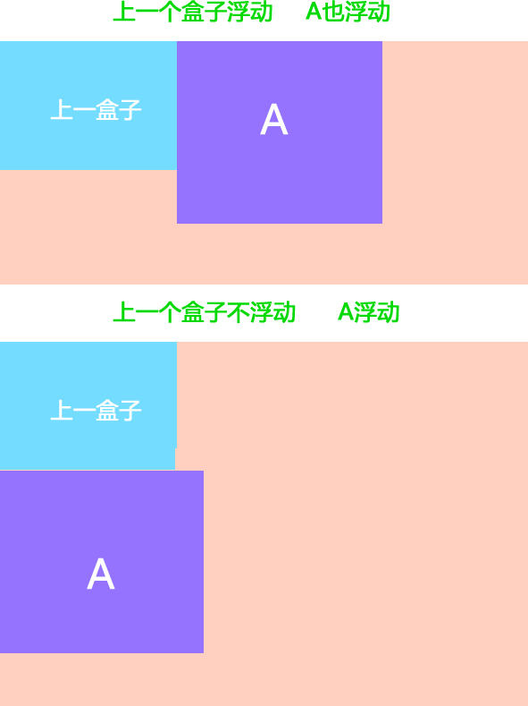

1.普通流(normal flow)
这个单词很多人翻译为 文档流 ， 字面翻译 普通流 或者标准流都可以。
前面我们说过，网页布局的核心，就是用CSS来摆放盒子位置。如何把盒子摆放到合适的位置？
CSS的定位机制有3种：普通流（标准流）、浮动和定位。
html语言当中另外一个相当重要的概念----------标准流！或者普通流。普通流实际上就是一个网页内标签元素正常从上到下，从左到右排列顺序的意思，比如块级元素会独占一行，行内元素会按顺序依次前后排列；按照这种大前提的布局排列之下绝对不会出现例外的情况叫做普通流布局。

2.浮动(float)
浮动最早是用来控制图片，以便达到其他元素（特别是文字）实现“环绕”图片的效果。
后来，我们发现浮动有个很有意思的事情：就是让任何盒子可以一行排列,因此我们就慢慢的偏离主题，用浮动的特性来布局了。（CSS3已经我们真正意义上的网页布局，具体CSS3我们会详细解释）

2.1 什么是浮动？
元素的浮动是指设置了浮动属性的元素会脱离标准普通流的控制，移动到其父元素中指定位置的过程。
在CSS中，通过float属性来定义浮动，其基本语法格式如下：
选择器{float:属性值;}
| 属性值 | 描述 |
|---|---|
| left | 元素向左浮动 |
| right | 元素向右浮动 |
| none | 元素不浮动（默认值） |
3.浮动详细内幕特性
- 浮动首先创建包含块的概念（包裹）。就是说， 浮动的元素总是找理它最近的父级元素对齐。但是不会超出内边距的范围。

- 浮动的元素排列位置，跟上一个元素（块级）有关系。如果上一个元素有浮动，则A元素顶部会和上一个元素的顶部对齐；如果上一个元素是标准流，则A元素的顶部会和上一个元素的底部对齐。

- 由2可以推断出，一个父盒子里面的子盒子，如果其中一个子级有浮动的，则其他子级都需要浮动。这样才能一行对齐显示。
- 浮动脱离标准流，不占位置，会影响后面的标准流。浮动只有左右浮动。
- 元素添加浮动后，元素会具有行内块元素的特性。元素的大小完全取决于定义的大小或者默认的内容多少
- 浮动根据元素书写的位置来显示相应的浮动。
总结： 浮动 ---> 浮漏特
浮： 加了浮动的元素盒子是浮起来的，漂浮在其他的标准流盒子上面。
漏： 加了浮动的盒子，不占位置的，它浮起来了，它原来的位置漏 给了标准流的盒子。
特： 特别注意，这是特殊的使用，有很多的不好处，使用要谨慎。
4.版心和布局流程
阅读报纸时容易发现，虽然报纸中的内容很多，但是经过合理地排版，版面依然清晰、易读。同样，在制作网页时，要想使页面结构清晰、有条理，也需要对网页进行“排版”。
“版心”是指网页中主体内容所在的区域。一般在浏览器窗口中水平居中显示，常见的宽度值为960px、980px、1000px、1200px等。
4.1 布局流程
为了提高网页制作的效率，布局时通常需要遵守一定的布局流程，具体如下：
1、确定页面的版心（可视区）。
2、分析页面中的行模块，以及每个行模块中的列模块。
3、制作HTML页面，CSS文件。
4、CSS初始化，然后开始运用盒子模型的原理，通过DIV+CSS布局来控制网页的各个模块。
4.2 一列固定宽度且居中

最普通的，最为常用的结构
4.3 两列左窄右宽型

比如小米 小米官网
4.4 通栏平均分布型

比如锤子 锤子官网